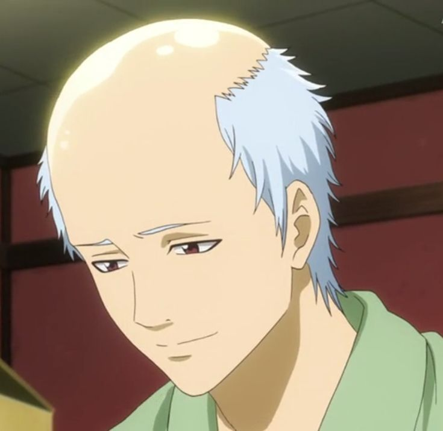

Have you ever looked at yourself in the mirror and thought, “Why do I feel like a tired old man when I’m barely in my twenties?” That’s what I call being mentally bald. You’re not losing hair, but you’re losing patience. You’re not physically sixty, but your brain is already sipping chai on the veranda, complaining about “kids these days.”
Mental baldness happens when stress sneaks up on you and refuses to leave. Deadlines pile up, responsibilities multiply, and suddenly you start carrying the weight of the entire world on your scalp. You don’t even notice it at first—you’re just tired, maybe snapping a little more than usual. But then, one day, you realize you’ve skipped the carefree stage of life and gone straight into “retired uncle mode.”
It’s a strange condition. On the outside, you still look young. Maybe you’ve got a fresh hoodie on, maybe your sneakers are clean. But inside, you’re groaning when you stand up, complaining about back pain, and worrying about bills that aren’t even yours yet. You start saying things like “in my time” or “these kids don’t understand.” Congratulations—you’re mentally bald.
The funny thing is, most of us don’t even realize how quickly it happens. Stress is sneaky. It doesn’t just make you tired; it makes you old before your time. College assignments, expectations from family, endless competition, social media pressure—layer by layer, your brain starts losing its shine. And unlike physical baldness, which you can cover with a cap, there’s no hat big enough to hide mental baldness.
But here’s the thing: it’s not permanent. Being mentally bald isn’t about losing who you are—it’s about forgetting to give yourself space to breathe. If life makes you feel sixty at twenty, maybe it’s a sign to slow down. Rest doesn’t make you lazy; it keeps you young. Laughter isn’t a waste of time; it’s hair oil for the soul. And saying “no” to toxic workloads isn’t weakness—it’s your hairline making a comeback.
Of course, I’m not saying stress will disappear magically. Adulting, studies, and responsibilities are real. But maybe we can choose not to let them age us faster than necessary. Play stupid games sometimes. Watch cartoons without guilt. Sleep like your pillow is more important than the WiFi. Call your friends and laugh over nonsense. That’s the shampoo routine your brain needs.
So, are you mentally bald? If yes, you’re not alone. Most of us are carrying imaginary walking sticks already. But don’t worry—mental baldness isn’t forever. With the right care, you can grow back your energy, your spark, and your silliness. Because honestly, life’s too short to spend your youth feeling like a grandpa.